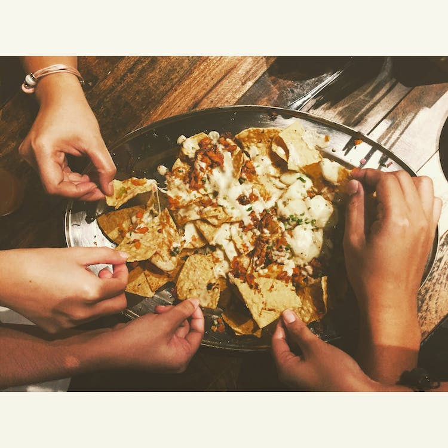

Insane Nachos

Insanity Level Nachos
After this recipe there's no going back to dipping
chips in bean dip. Lets jump right in and learn how
to make Insane Nachos!
Ingredients
- Corn chips
- Queso
- Cheese
- Your choice of meat
- Sour cream
- Canned refried beans
- Cilantro
Instructions
- Pre-heat oven to 400.
- Put base layer of chips onto
baking sheet. (don't overlap chips)
- Spread cheese and queso, beans onto
first chip layer. Then top with another layer
repeat as many times as you like.
- Top final layer with mounds of cheese
bake at 400 for 5mins
- Garnish with cilantro
Enjoy!
return